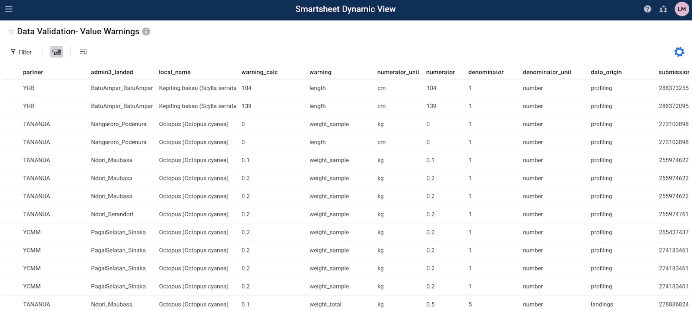

Validación de datos
Guía de Validación de Datos Pesqueros
Todos los datos que fluyen a través del sistema de datos de pesquerías se validan en Smartsheet. Los datos se envían para su validación en tres escenarios; 1) los nombres nuevos u ‘otra’ información se agregan manualmente en Kobo Collect, 2) un valor numérico supera los umbrales establecidos o 3) los nombres en el conjunto de datos no tienen una coincidencia correspondiente en un archivo de referencia. Una vez validados los datos, se actualizan tanto los conjuntos de datos de la base de datos como las tablas de referencia. Las tablas de referencia sirven como entradas para las listas desplegables en los formularios de KoBoToolbox y contienen datos que se agregan a los conjuntos de datos a través de uniones. Vea el árbol de decisiones a continuación (Figura 1).
Los datos activados para la validación se envían a una de cuatro tablas: 1) Nombres y Artes, 2) Advertencias de Valor, 3) Especies o 4) Otros. Las instrucciones a continuación detallan el proceso de validación de datos en la vista dinámica de Smartsheet para las cuatro tablas de validación. Cada tabla de validación requerirá seleccionar el valor de campo correcto de una lista desplegable o ingresar los valores correctos manualmente. El proceso se adjuntará para futuras necesidades de validación de datos, según sea necesario.
La tabla de validación ‘Nombres y artes’ contiene nuevos datos de todas las encuestas de Kobo, incluidos los nuevos nombres de pescadores, compradores, recopiladores de datos, caladeros, sitios de desembarque y artes. Las “Advertencias de valor” contienen información numérica recopilada a partir de la encuesta de Seguimiento de Desembarques o de Elaboración de Perfiles de Desembarques que marcó un valor de precio, peso o eslora en función de un umbral preestablecido. Los umbrales preestablecidos para las advertencias de peso y longitud se originan en lw_ref; y las advertencias de precios se originan en min_max_ref. La tabla de validación de ‘Especies’ contiene fotos y nuevos nombres locales de todas las encuestas para validar nuevas especies mediante un proceso de doble verificación. Por último, la tabla de validación de’ Otros ‘datos contiene’ otra ’ información recopilada a partir de la Elaboración de Perfiles de Desembarques, la Elaboración de Perfiles Comunitarios o la Encuesta de Hogares y se valida principalmente con fines traslacionales.
Se envían mensajes diarios por correo electrónico con información y enlaces sobre cómo completar la validación de datos (consulte las instrucciones detalladas a continuación). Se pueden enviar notificaciones adicionales de Smartsheet por correo electrónico para dar seguimiento a las selecciones incompletas de validación de datos, si es necesario.
Paso 1: Proporcionar un punto de contacto, nombres y direcciones de correo electrónico de los responsables de la validación de datos.
La organización que administra varios socios puede proporcionar todos los puntos de información de contacto.
Los socios individuales pueden proporcionar información de contacto.
Los puntos de contacto recibirán notificaciones de validación de datos a través de correo electrónico.
Paso 2: Revise su correo electrónico para ver si hay una solicitud de validación de datos.
Recibirá un correo electrónico de “Automatización de Smartsheet” (Figura 2)
El correo electrónico contendrá un mensaje con enlaces para proceder a la validación a través de una “Vista dinámica” o “Solicitud abierta”. La Vista dinámica es un formato de tabla y la solicitud Abierta lo dirigirá a un formulario de validación.
Para abrir con “Vista dinámica” (Paso 3, Opción A), haga clic en el enlace que comienza con “https://dynamicview.smarthseet.com….”
Para abrir el formulario de solicitud de actualización (Paso 3, Opción B), haga clic en el botón azul “Abrir solicitud”.
Aparecerá una vista previa de las entradas que deben validarse debajo de este mensaje, pero no podrá validar ningún dato directamente en el correo electrónico
En la parte inferior del correo electrónico, hay un enlace para “Ir a la hoja”; sin embargo, la hoja subyacente tiene acceso restringido. Revise su validación de datos a través de la vista dinámica, la solicitud abierta o el informe específico de su socio (próximamente).
Figura 1: Árbol de decisión de validación de datos.

Figura 2: Mensaje de Correo Electrónico de Validación de Smartsheet de Muestra

Paso 3, Opción A: Complete su validación de datos a través de la Vista dinámica (recomendado)
Para esta opción, deberá crear una cuenta gratuita de Smartsheet. Se le indicará desde el correo electrónico que configure una cuenta.
Haga clic en el enlace Vista dinámica en la solicitud por correo electrónico.
Se abrirá una nueva ventana del navegador de Internet con una configuración similar a una tabla para todas las entradas. Aquí, puede desplazarse fácilmente por todas las entradas que necesitan validación.
Haga clic en una fila para comenzar la validación.
Aparecerá un panel de “Detalles” a la derecha.
Revise los campos de contexto y rellene los campos de validación. Los campos de validación contienen los datos que se transferirán al conjunto de datos final (Tabla 1).
Deja un comentario, SOLO SI hay algo que necesita nuestra atención. El personal de Blue Ventures (BV) revisará los comentarios y responderá adecuadamente.
Haga clic en el botón azul “Guardar” para guardar su selección.
Una vez validada, esa fila desaparecerá de su vista dinámica.
Haga clic en la fila siguiente y repita los pasos para completar la validación de todas las entradas.
Puede salir y volver a ingresar haciendo clic en el enlace de vista dinámica de su correo electrónico o iniciando sesión en su cuenta en cualquier momento. No es necesario que valide todas las entradas de una sola vez.
Puede marcar este enlace y volver en cualquier momento.
Tabla 1: Campos o columnas principales en las tablas de validación. Los campos de contexto proporcionan la información necesaria para validar los datos. Los campos de validación se rellenan con datos que se transferirán a los conjuntos de datos maestros. Solo se pueden editar los campos de validación. Algunos campos solo son visibles en el panel” Detalles ” cuando se hace clic en una fila en la tabla de vista dinámica.
| Campo de tabla de validación | Descripción del campo | Tipo de campo |
|---|---|---|
| All Data Validation Tables | ||
| partner | nombre de la organización que recopila los datos | contexto |
| admin3_landed | Aldea o sub aldea donde se desembarcó y registró la captura | contexto |
| data_collector | Nombre de la persona que recopiló los datos en Kobo (enumerador) | contexto |
| Names and Gears | ||
| kobo_field | El campo del formulario de KoboCollect que debe validarse o el nombre que no coincide en los archivos de referencia. | contexto |
| new_data | El valor que se ingresó para el kobo_field correspondiente | contexto |
| ref_match1 | Nombre estrechamente coincidente que ya existe en la base de datos. Si está en blanco, ningún nombre existente coincide con el nombre en la columna “nuevo_datos” | contexto |
| ref_match2 | Nombre estrechamente coincidente que ya existe en la base de datos. Si está en blanco, ningún nombre existente coincide con el nombre en la columna “nuevo_datos” | contexto |
| ref_match3 | Nombre estrechamente coincidente que ya existe en la base de datos. Si está en blanco, ningún nombre existente coincide con el nombre en la columna “nuevo_datos” | contexto |
| validation_options | Seleccione el campo con los datos correctos (datos_nuevos, ref_match1, ref_match2, ref_match3), ingrese otro valor (otro) o elimine (elimine la fila del análisis porque los datos no se pueden validar). Requerido. Solo visible en el panel de detalles. La entrada desaparecerá una vez que se validen los datos. | validación |
| other | Ingrese otro valor si ninguna de las opciones de validación es correcta. Obligatorio SI se selecciona” otro ” en validation_options. Solo visible en el panel de detalles. | validación |
| landings_submission_ids | Lista de ID de envío en la que aparece este nuevo valor de datos, del formulario Kobo de monitoreo de aterrizajes | contexto |
| profiling_submission_ids | Lista de ID de envío en la que aparece este nuevo valor de datos, del formulario de perfiles de aterrizajes de Kobo | contexto |
| hhs_submission_ids | Lista de ID de envío en la que aparece este nuevo valor de datos, del formulario Kobo de la encuesta de hogares. | contexto |
| species_group | El grupo de especies asociado con el nuevo nombre del equipo, tal como se recoge en el formulario de Kobo. Esto solo aparecerá si “kobo_field” es una categoría de equipo. | contexto |
| gear_type | Se requiere SI se validan nuevos nombres de equipo. Una lista desplegable de tipos de equipo que se asociarán con el nombre del equipo validado. | validación |
| fisher_gender | El género asociado con el nuevo pescador, tal como se recoge en el formulario de Kobo. Esto solo aparecerá si el” kobo_field ” es un nombre de pescador. | contexto |
| buyer_gender | El género asociado con el nuevo comprador, según se recoge en el formulario de Kobo. Esto solo aparecerá si el” kobo_field ” es un nombre de comprador. | contexto |
| Value Warnings | ||
| fisher_name | Nombre del pescador que consiguió la captura | contexto |
| date_landed | Fecha en que se desembarcó la captura | contexto |
| local_name | Nombre local de la especie | contexto |
| warning_calc | Valor unitario: peso / individual, precio / peso, largo / individual, ancho / individual | contexto |
| warning | Tipo de advertencia | contexto |
| numerator | Valor del numerador de advertencia: peso, precio, longitud | contexto |
| numerator_unit | Unit of numerator: kg, g, lb, ons, USD, IDR, PHP, cm | contexto |
| denominator | Valor del denominador: cuenta, peso | contexto |
| denominator_unit | Unidad de denominador: número, kg, g, lb, ons | contexto |
| correct | Y = los valores son correctos, N=los valores son incorrectos, Remove = eliminar del análisis porque los valores no se pueden validar. Requerido. | validación |
| correct_numerator | Si es correcto = Y, los valores se rellenan automáticamente, si es correcto = N, ingrese el valor correcto | validación |
| correct_denominator | Si es correcto = Y, los valores se rellenan automáticamente, si es correcto = N, ingrese el valor correcto | validación |
| correct_numerator_unit | Si las unidades numerator_units son incorrectas, seleccione la opción correcta en el menú desplegable | validación |
| data_origin | Conjunto de datos de donde provienen los datos (monitoreo de desembarques o elaboración de perfiles). | contexto |
| submission_id | ID de envío del formulario de Kobo. Úselo para comparar con datos sin procesar, si es necesario, para la validación. | contexto |
| Species | ||
| data_origin | Origen o fuente de los datos: ‘landings’,’ profiling’,’ community_profiling ‘o’hhs’ | contexto |
| admin1 | Admin1 donde se desembarcó y registró la captura. | contexto |
| admin2 | Admin2 donde se desembarcó y registró la captura. | contexto |
| fisher_name | Nombre del pescador asociado a los datos de esta nueva especie. | contexto |
| new_species_photo | Enlace a la foto que se envió en Kobo Collect | contexto |
| new_data | El valor que se ingresó como un nuevo nombre local de especie en Kobo Collect O un nombre local e ID de nombre científico (localname_scientificspecies) que ya no coincide con un nombre encontrado en species_ref | contexto |
| ref_match1 | Nombre estrechamente coincidente que ya existe en la base de datos. Si está en blanco, ningún nombre existente coincide con el nombre en la columna “nuevo_datos” | contexto |
| ref_match2 | Nombre estrechamente coincidente que ya existe en la base de datos. Si está en blanco, ningún nombre existente coincide con el nombre en la columna “nuevo_datos” | contexto |
| ref_match3 | Nombre estrechamente coincidente que ya existe en la base de datos. Si está en blanco, ningún nombre existente coincide con el nombre en la columna “nuevo_datos” | contexto |
| eng_common_name_new | Nombre común inglés de nueva especie. Proporcione si lo sabe, de lo contrario déjelo en blanco. (No es obligatorio) | validación |
| scientific_family_new | Apellido científico de nuevas especies. Proporcione si lo sabe, de lo contrario déjelo en blanco. (No es obligatorio) | validación |
| scientific_species_new | Nombre científico de las especies nuevas. Proporcione si lo sabe, de lo contrario déjelo en blanco. Obligatorio: Si se desconoce el nombre de la especie, ingrese cualquier nivel de identificación taxonómica (por ejemplo, Apellido, nombre común en inglés) | validación |
| submission_id | ID de envío del formulario de Kobo. Úselo para comparar con datos sin procesar, si es necesario, para la validación. | contexto |
| validation_options | Seleccione el campo con los datos correctos (nombre_local_nuevo, ref_match1, ref_match2, ref_match3), ingrese otro valor (otro) o elimine (elimine la fila del análisis porque los datos no se pueden validar). Requerido. Solo visible en el panel de detalles. La entrada desaparecerá una vez que se validen los datos. | validación |
| other | Ingrese otro valor si ninguna de las opciones de validación es correcta. Obligatorio SI se selecciona” otro ” en validation_options. Solo visible en el panel de detalles. | validación |
| latest_comment | Esta columna almacena el último comentario que se realizó para esa fila. Para ver la discusión completa de los comentarios de esa fila, simplemente haga clic en cualquier lugar de la fila. Aparecerá el panel de detalles y haga clic en la pestaña “Comentarios” para ver todos los comentarios de esa fila. | auto |
| Other | ||
| kobo_field | El campo del formulario de KoBoToolbox que necesita ser validado. Esto podría deberse a una pregunta en la Elaboración de Perfiles de Desembarco, Elaboración de Perfiles Comunitarios o Encuesta de Hogares. | contexto |
| new_data | El valor que se ingresó para el kobo_field correspondiente | contexto |
| data_origin | Conjunto de datos de donde provienen los datos (Perfiles de desembarques, perfiles comunitarios o encuestas de hogares). | contexto |
| submission_id | ID de envío del formulario de Kobo. Úselo para comparar con datos sin procesar, si es necesario, para la validación. | contexto |
| validation_options | Seleccione el campo con los datos correctos (datos_nuevos), ingrese otro valor (otro) o elimine (elimine la fila del análisis porque los datos no se pueden validar). Requerido. Solo visible en el panel de detalles. La entrada desaparecerá una vez que se validen los datos. | validación |
| other | Ingrese otro valor si ninguna de las opciones de validación es correcta. Obligatorio SI se selecciona” otro ” en validation_options. Solo visible en el panel de detalles. | validación |
| validated_data_english | Requerido. Ingrese la traducción al inglés del nuevo_datos u otro campo si se seleccionó ‘otro’ como opción de validación. Solo visible en el panel de detalles. | validación |
Figura 3: Ejemplo de Advertencias de Valor de Vista dinámica

Figura 4: Vista Dinámica de Ejemplo - Panel de Detalles

Paso 3, Opción B: Complete su validación de datos a través de’Solicitud abierta’
Para esta opción, no necesita iniciar sesión en una cuenta de Smartsheet .
Haga clic en el botón” Abrir solicitud ” en el mensaje de correo electrónico de validación.
Se abrirá una nueva ventana del navegador de Internet con una configuración similar a un formulario para cada entrada
Revise los campos de contexto y rellene los campos de validación. Los campos de validación contienen los datos que se transferirán al conjunto de datos final (Tabla 1).
Haga clic en siguiente en la parte inferior de la pantalla para desplazarse por cada entrada que deba validarse.
Para omitir una entrada (por ejemplo, si aún no está seguro de qué respuesta elegir), haga clic en” Siguiente ” sin hacer una selección en la columna ‘validation_options’. Aparecerá la siguiente entrada para validación.
Si necesita salir de la página o detenerse antes de que se hayan validado todas las entradas, sus opciones deben guardarse la próxima vez que vuelva a abrir la solicitud. Al abrir para continuar, simplemente haga clic en “Siguiente” hasta que encuentre una entrada que necesite validación.
Cuando llegue a la última entrada, haga clic en “Listo”. Aparecerá un mensaje emergente que le preguntará si está listo para enviar su actualización.’:
Haga clic en “Volver” si necesita revisar
Haga clic en” Enviar actualización ” para enviar la validación
Marque la casilla” Enviarme una copia de mis respuestas ” si desea que se le envíe una copia de sus respuestas a su correo electrónico
Si hace clic en” Enviarme una copia de mis respuestas”, recibirá un correo electrónico titulado”Confirmación de actualización: Nombres y engranajes”.
Habrá una tabla que resume qué entradas se actualizaron. No se incluirán las entradas en las que no se haya seleccionado ninguna opción en ‘validation_options’.
Este correo electrónico puede contener un enlace a un nombre de hoja “Validación de datos-Nombres y engranajes”; sin embargo, el acceso a esta hoja está bloqueado.
Para ver cualquier validación restante necesaria, deberá esperar el próximo correo electrónico de solicitud de actualización o abrir la Vista dinámica.
Figura 5: Ejemplo de formato de “Solicitud abierta”

Preguntas Frecuentes:
- ¿Pueden varias personas trabajar en la validación de datos al mismo tiempo?
- Sí, sin embargo, una vez que se haya validado una entrada (fila) en la Vista dinámica, ya no estará visible.
- ¿Necesito una cuenta de Smartsheet?
- Solo para completar la validación de datos a través de la Vista dinámica (es decir, la vista de tabla). No necesita una cuenta paga, con una versión de prueba gratuita o gratuita (una vez que se complete su prueba), podrá ver e interactuar con todos los archivos de Smartsheet.
- ¿Qué sucede después de validar los datos?
- En algunos casos, los datos se someterán a una revisión adicional por parte del equipo de Blue Ventures Data. Los datos validados se actualizarán en la base de datos y, cuando corresponda, los menús desplegables se actualizarán en los archivos y formularios de referencia de Kobo (Figura 6). Los datos que no hayan sido validados no aparecerán en las visualizaciones o estadísticas del panel, pero estarán disponibles en la descarga de datos sin procesar.
Si en algún momento encuentra algún error, tiene preguntas o necesita asistencia para completar la validación de datos, contáctenos en mary.mccabe@blueventures.org.
Figura 6: Validación de Datos para Hacer Referencia al Flujo de Trabajo del Archivo